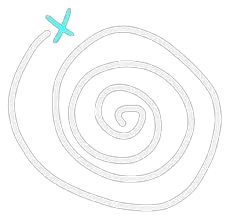

Sua pontuação mais alta: Carregando...
Sua última pontuação: Carregando...
Seu gráfico de pontuação 
Calculando porcentagem de acertos...
Top 3 Melhores do servidor
Top 10 Melhores do servidor
Erros e Acertos Gerais
Calculando porcentagem de acertos e erros...